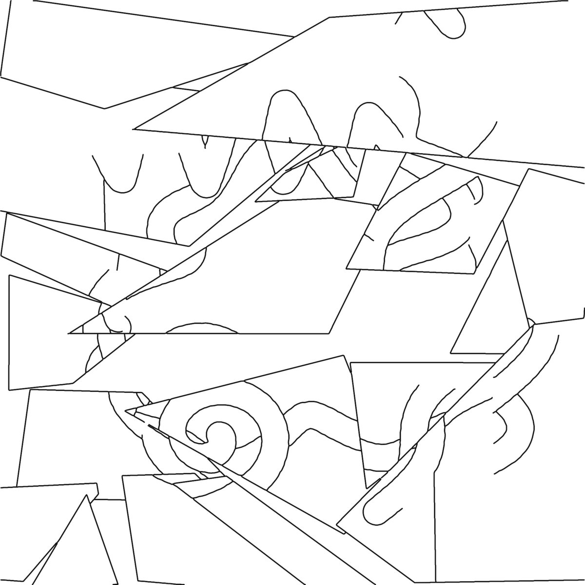

早期以生物繪圖為創作方向，同時投入表演藝術工作領域，在過程中找尋新的創作媒材。
作品主要從物件的質地與紋路出發，思索在流動的意象之中如何被轉化，並探索物件與空間的關係如何被形塑。作品見於藝術、平面設計、表演藝術領域。
Roubert began with biological illustration while also working in the performing arts, searching for new creative media along the way. His work starts from the texture and grain of objects — considering how they are transformed within fluid imagery, and exploring how the relationship between object and space takes shape. His work spans art, graphic design and the performing arts.